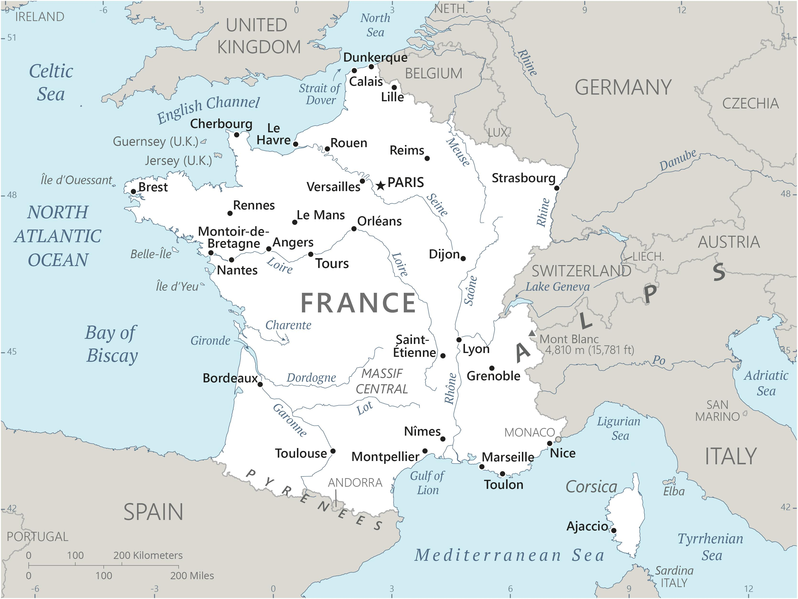

Genel Bilgiler
Fransa, Batı Avrupa’da üniter bir cumhuriyettir. Başkenti Paris olup resmi dili Fransızca’dır. Yaklaşık 66–68 milyon nüfusu vardır ve kişi başına düşen yaşam standardı, sağlık ve eğitim göstergeleri bakımından dünyada üst sıralarda yer alır. Cumhurbaşkanlığı sistemiyle yönetilen ülkede yasama yetkisi iki meclise (Meclis ve Senato) aittir. Para birimi Euro’dur.
Fransa, Batı Avrupa’da yer alır; kuzeybatısında İngiltere (Manş Denizi ile), kuzeyinde Belçika ve Lüksemburg, doğusunda Almanya, İsviçre ve İtalya, güneyinde İspanya ve Andorra ile sınır komşusudur; güneydoğusunda Akdeniz’e, batısında Atlantik Okyanusu’na kıyısı vardır. Metropol Fransa’nın yüzölçümü yaklaşık 547.000 km²’dir. Ayrıca denizaşırı bölgeleri de vardır.
Başkent: Paris
Kıta: Avrupa
Yüzölçümü: 551.695 km²
Nüfus (2025): 67.081.000

Bayrak Anlamı: Fransa bayrağı ‘Tricolore’ adıyla bilinir; dikey olarak mavi – beyaz – kırmızı şeritlerden oluşur. Mavi ve kırmızı Paris’in renkleridir, beyaz ise eski krallık rengidir. 1789 Fransız Devrimi sırasında bu üç renk halk, şehir ve monarşi simgeleri olarak birleşmiş ve ulusal bayrak hâline gelmiştir. Bu renkler; özgürlük, eşitlik ve kardeşlik değerlerini temsil eder.
Fransa Haritası
Ekonomi
Fransa ekonomisi tarım, sanayi ve hizmetler alanlarında dengeli bir yapıya sahiptir. Tarım sektörü Avrupa Birliği içinde büyük öneme sahiptir; buğday, mısır, et ve şarap üretimi öne çıkar. Sanayi sektöründe otomotiv, kimya, elektronik, ilaç, savunma ve havacılık endüstrileri güçlüdür; otomotiv markaları Peugeot, Renault; havacılıkta Airbus gibi büyük oyuncular vardır. Hizmet sektörü ekonominin büyük kısmını oluşturur; turizm, finans, telekomünikasyon ve lüks mallar ihracatı önemli gelir kaynaklarıdır. Ayrıca Fransa’da araştırma-geliştirme harcamaları yüksektir.
| Yıl | İhracat (Milyar $) | İthalat (Milyar $) |
|---|---|---|
| 2019 | 532 | 618 |
| 2020 | 468 | 556 |
| 2021 | 566 | 658 |
| 2022 | 607 | 701 |
| 2023 | 615 | 710 |